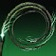
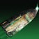
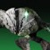

效果
| 名称 | 图标 | 说明 |
|---|---|---|
| 缠结 | 装备缚丝技能时，击杀受缚丝减益（割裂、悬停、瓦解）影响的战斗人员生成一枚缠结。 缚丝元素拾取物，是一个构造体，有 ? 点生命值，最多存在 20 秒；5 米内可以拾取，最多持有 20 秒。 生成后有 12 秒冷却，冷却结束前无法生成更多。 攻击它或把它投出去都会引爆，在 8 米半径内造成 346 [100] 伤害；两种方式都计为一次元素交互。 用抓钩钩住缠结会完全返还手雷能量并把使用者拉过去。 | |
| 抓钩缠结 | 只与抓钩交互的缠结等价物，抓钩时表现与普通缠结一致。 最长持续 20 秒，每次抓钩刷新 5 秒；无法被摧毁，也无法拾取。 瞄准 27 米（装备抓钩手雷时 32 米）内的抓钩缠结，会在 0.3 秒内把手雷技能覆盖为非攻势抓钩。 缚丝与棱镜分支职业允许使用抓钩近战；棱镜术士需要装备神秘织针才能用。 连续 5 次抓取同一枚抓钩缠结后，刷新量降到 1 秒。 | |
| 线虫 | 缚丝召唤物，追逐 20? 米内的战斗人员，在 ? 米内跃向目标。 接触或跃起后爆炸，在小范围内最多造成 366 [35] 伤害。 接触前丢失目标的线虫会落地另寻战斗人员，而不是自爆。 线虫的伤害计入其生成来源，但一旦停栖就失去这层继承关系。 术士互动： 未开始追踪战斗人员的线虫飞行 14 米后返回并停栖，最多 5 只。 造成武器伤害或近战命中时逐只释放，每次释放间隔 0.5 秒。 以这种方式释放的线虫可以在任意射程追踪。 | |
| 织造铠甲 | 提供 45% [25%] 伤害抗性，持续 10 秒。 来自守护者的精准命中与近战攻击无视这层抗性。 施放任意超能技能时织造铠甲被移除。 | |
| 割裂 | 战斗人员造成的伤害降低 40% [15%]，持续 10+5 [5+2.5] 秒。 | |
| 悬停 | 被悬停的战斗人员无法移动、射击或使用技能。 与最多被悬停 6+2 秒，只有 3+1 秒。 不受悬停效果阻挡，1 秒后挣脱，改为受到 300 缚丝伤害；尽管如此，这段时间内它仍视为带着悬停减益。 被悬停的被抬到空中，可以缓慢水平悬浮并腰射武器，持续 2+1 秒，视角切到第三人称。 势不可挡勇士被悬停时进入眩晕。 | |
| 瓦解 | 被瓦解的战斗人员在受到 40 点伤害后 0.25 秒释放 3 条追踪线，飞向 ? 米内的战斗人员。 每条线造成 26 [4] 伤害并在命中时施加瓦解。 两次释放之间有 1.2 秒冷却。 线命中会把瓦解的持续时间刷新回它原本的长度——若来源施加的是 9 秒，命中就重置回 9 秒。 | |
| 瓦解弹药 | 缚丝武器造成伤害时施加瓦解。 |
碎片
| 碎片 | 图标 | 说明 | 属性变化 |
|---|---|---|---|
| 上升 | 使用手雷技能补满已准备的武器，并提供 +40? 操控性、+40 填装速度、换弹时长 ×0.925 与 +30 空中效率，持续 15 秒。 激活后每次补弹之间有 4 秒冷却。 | +10 武器 | |
| 束缚 | 超能击杀使战斗人员触发一次悬停爆裂，在 6 米内造成 108 [?] 伤害并施加悬停。 | +10 生命值 | |
| 持续 | 缚丝减益的持续时间通常延长 50%。 受影响的来源会在常规时长旁用小字标出增量。 | — | |
| 进化 | 线虫移动速度提高 30?%，飞得更远，伤害也更高。 对战斗人员 +33%，对 +12.5%。 | +10 超能 | |
| 终局 | 终结技生成线虫，数量随战斗人员等级变化。 1 只 ｜ 2 只 ｜ 3 只。 | +10 职业 | |
| 狂怒 | 用缠结造成伤害时，每次伤害实例提供一部分近战能量。 T1 级战斗人员 10% ｜ T2 18% ｜ T3 20% ｜ T4 30% ｜ 25%。 两次触发之间约有 1 秒冷却。 | -10 近战 | |
| 生成 | 造成伤害时提供一部分手雷技能能量。 回能随来源与伤害量而变，通常造成的伤害越高，回的能量越多。 | -10 手雷 | |
| 孤立 | 2 秒内连续取得多次精准命中后，发射一次割裂爆裂，对 ? 米内的战斗人员施加割裂。 精准命中按武器流派计数，满 100% 触发：独头霰弹枪 50% ｜ 弓箭与狙击步枪 34% ｜ 手炮与斥候步枪 25% ｜ 手枪 20% ｜ 自动步枪 15% ｜ 机枪与脉冲步枪 12% ｜ 追踪步枪与微型冲锋枪 10%。 割裂后有 4 秒冷却，冷却期间的精准命中不计入。 | — | |
| 思维 | 击杀被悬停的战斗人员按等级提供职业技能能量。 T1 级战斗人员 10% ｜ T2 12% ｜ T3 15% ｜ T4 30% ｜ 15%。 每次击杀后约有 1 秒冷却。 | — | |
| 增殖 | 充能近战技能击杀为缚丝武器提供瓦解子弹，持续 8 [5] 秒。 | +10 近战 | |
| 重生 | 缚丝武器击杀推进计数，满 100% 生成若干线虫。 34%（1 只）｜ 67%（2 只）｜ 与 100%（3 只）｜ 67%（2 只）。 | — | |
| 蜕变 | 织造铠甲激活期间，武器击杀生成缠结。 | +10 近战 | |
| 守护 | 拾取能量球提供织造铠甲，持续 5 秒。 | -10 生命值 | |
| 智慧 | 击杀被悬停的战斗人员生成一枚能量球，提供 2.5% 超能能量。 生成能量球后有 10 秒冷却。 | — |
手雷技能
| 手雷 | 图标 | 说明 | 基础冷却 |
|---|---|---|---|
| 抓钩 | 钩住 22 米外的目标，造成 38 [?] 伤害并在接触时使战斗人员踉跄，同时附着到战斗人员或物体上。 激活 1 秒内取消返还 50% 手雷能量。 钩住缠结或抓钩缠结时： 完全返还抓钩技能充能，并提供抓钩返还持续 4 秒——增益期间抓钩结束可以立即再用。 此时手雷快速启动不会激活。 抓钩近战 ｜ 抓钩期间，或结束后 ? 秒内速度仍够快时，按［近战攻击］发动。 造成 432 [61] 直击伤害与在 4? 米半径内最多 432 [61] 径向伤害，施加瓦解并把战斗人员推开。 它同时计为手雷与近战技能。 被抓钩近战直接命中的守护者近战突进失效 0.5 秒；抓钩近战配合抓钩缠结使用时，点尸成金提供的超能能量减少 50%。 空中期间抓钩的被动技能恢复被禁用，丝线打击同理。 心纺祷告： 抓钩近战命中时生成 3 只线虫。 | 基础冷却 107.9 秒 回复倍率 0.875× | |
| 束缚手雷 | 捕缚球弹道 投出一枚捕缚球，受到伤害时释放爆炸，造成 190 [?] 伤害并在 ? 米半径内对被命中的战斗人员施加悬停。 随后释放更小的捕缚球——直接命中释放 2 个，接触表面则释放 3 个。 更小的捕缚球射向附近战斗人员，每个造成 81 [?] 伤害并在命中时施加悬停。 心纺祷告： 提供织者迷境持续 25 秒；期间击杀的战斗人员死亡时触发悬停爆炸，对 6 米内的战斗人员造成 108 [?] 缚丝手雷技能伤害。 | 基础冷却 219.5 秒 回复倍率 0.5× | |
| 切线 | 中型弹道 投出一枚弹跳手雷，接触后不久爆炸，在 6 米范围内造成 4 次溅射伤害并施加割裂，持续 10+5 秒。 四次爆炸最大伤害： 第 1 次 178 [?] ｜ 第 2 次 178 [?] ｜ 第 3 次 222 [?] ｜ 第 4 次 267 [?]。 对任意战斗人员的第一次命中额外造成一次 307 [?] 伤害。 心纺祷告： 第四次爆炸呈 X 形释放 4 枚子弹药，每枚最多造成 64 [?] 伤害并生成缠结，无视缠结的生成冷却。 | 基础冷却 219.5 秒 回复倍率 0.5× | |
| 线虫手雷 | 中型弹道 在半空中分裂为 3 发弹体，每发接触时生成一只线虫。 心纺祷告： 按住［手雷］改为准备巢穴手雷，接触时生成拥挤巢穴。 巢穴有 300 构造体生命值，持续 17.5 秒；满血 1.5 秒后开始每秒消耗 6.7% 自身生命值。 部署时孕育 3 只线虫，此后每 5 秒再产一只。 | 基础冷却 175.6 秒 回复倍率 0.625× |
猎人
| 名称 | 图标 | 说明 | 冷却与槽位 |
|---|---|---|---|
| 近战技能 | |||
| 线织尖刺 | 弹体命中或撞到表面时弹跳，最多飞向 ? 米内的 9 名战斗人员，造成 427 [82] 伤害并在命中时施加割裂，持续 ?+? 秒。 第一次弹跳伤害减 18%，之后每次减 42.5%。 返回时按命中次数提供近战能量；弹体靠近时按［近战攻击］可以接住它，接住能提高回能量。 命中 / 近战回能 / 接住回能： 0 次 5% / 20% ｜ 1 次 10% / 30% ｜ 2 次 20% / 50% ｜ 3 次 30% / 70% ｜ 4 次 35% / 85% ｜ 5 次以上 40% / 100%。 缚丝分支职业专属： 接住线织尖刺时，每次击杀提供 2 秒织造铠甲，最多 10 秒。 | 基础冷却 145.2 秒 回复倍率 0.8× | |
| 超能技能 | |||
| 丝线打击 | 伤害抗性：90% [45%] 基础持续：24.5 秒，或每秒消耗 4% 超能能量 轻攻击 ｜ 消耗 4% 超能能量。 命中造成 1638 [260] 伤害；击杀会让战斗人员爆炸，对 ? 米内的战斗人员最多造成 1293 [?] 伤害。 重击 ｜ 消耗 9% 超能能量。 以 360 度挥动绳镖，在 ? 米半径内造成 504 [80] 伤害，每次使用命中两次。 手雷 ｜ 不消耗超能能量。 功能上等同一枚扎根后立即充能的抓钩手雷。 职业技能 ｜ 消耗 4.5% 超能能量。 播放电弧法杖闪避动画，躲开攻击。 装备星相「诱捕猛击」时可以反复使用它，每次代价 4.5% 超能能量。 | T2 级超能 基础冷却 556 秒 | |
| 星相 | |||
| 诱捕猛击 | 按［空中移动］： 消耗职业技能能量向下俯冲，对 8 [6.5] 米内的战斗人员造成 61 [11] 伤害并施加悬停。 触发已装备职业技能的效果，装备线织幽灵时也一并触发。 每悬停一名战斗人员提供 4 秒织造铠甲，最长 20 秒。 | ||
| 线织幽灵 | 使用职业技能生成一个缚丝诱饵。 诱饵有 175 生命值，最多持续 12 秒；战斗人员会被吸引去攻击它，它对战斗人员有 70% 伤害抗性。 盟友与铸造者对它造成的技能与武器伤害提高 150%。 诱饵始终计为敌对目标，盟友、战斗人员与铸造者都能伤害它，且不会触发任何击杀效果。 失去全部生命值或 ? 米内有战斗人员时爆炸，最多在 ? 米半径内造成 600 [60 守护者 ｜ 121 物体] 伤害；由战斗人员靠近触发的爆炸会生成 2 只线虫。 装备时被动施加 0.6 倍职业技能充能速度。 | ||
| 回旋漩涡 |  | 摧毁一枚普通缠结时： 召唤一枚旋转缠结，它会搜寻 ? 米内的战斗人员，接近时加速到最高 6 米/秒，并计为抓钩缠结。 旋转缠结有 ? 点构造体生命值，持续 12 秒，每 0.1 秒在 2? 米半径内造成 29 [?] 缚丝伤害，击杀时释放瓦解弹。 旋转缠结的击杀计为缠结击杀，但它的命中既不计为缠结命中，也不计为技能伤害。 | |
| 寡妇之丝 | 额外提供一次手雷技能充能。 抓钩生成抓钩缠结；抓钩若附着到战斗人员或盟友身上则不生成。 抓钩近战命中同样生成抓钩缠结。 若这次抓钩本身就因瞄准缠结或抓钩缠结而免费，则不会再生成。 | ||
泰坦
| 名称 | 图标 | 说明 | 冷却与槽位 |
|---|---|---|---|
| 近战技能 | |||
| 狂暴利刃 | 固有 3 次近战技能充能，充能速度随余量变化： 0 充能 1.15× ｜ 1 充能 1.55× ｜ 2 充能 1.95×。 棱镜下额外承受 0.7 倍充能速度惩罚。 向前冲刺 ? 米并挥砍战斗人员，造成 569 [105] 伤害并施加割裂。 | 基础冷却 159.6 秒 回复倍率 0.7× | |
| 超能技能 | |||
| 剑刃之怒 | 伤害抗性：90% [50%] 基础持续：24 秒，或每秒消耗 4.167% 超能能量 超能结束时提供 3 次近战技能充能。 轻攻击 ｜ 消耗 3% 超能能量。 打出强化狂暴利刃近战，造成 851 [210] 伤害，可以无限连锁；对被悬停的战斗人员伤害提高 25%。 每秒攻击 3 次，连续命中 3 次后攻速提高 100%；使用重击或断连都会清掉加速。 重击 ｜ 消耗 10.5% 超能能量，使用后有 3 秒冷却。 掷出一对追踪的悬停弹体，造成 143 × 2 [61] 直击伤害与在 ? 米内最多 608 × 2 [36] 溅射伤害。 轻攻击命中或自身受伤，冷却各缩短 1 秒。 | T2 级超能 基础冷却 556 秒 | |
| 星相 | |||
| 战争旗帜 | 刀剑击杀、近战击杀、偃月近战击杀、超能轻攻击击杀或终结技时： 升起战争旗帜，为自己与 10 米内的盟友提供增益。 旗帜基础持续 15 秒，最长 24 秒；自己或附近盟友的击杀会强化并延长它，最多 4 层、30 秒。 每 7 [2] 名在 20 米内死亡的战斗人员提供 1 层；层数越高，延长量递减、恢复脉冲越快。 旗帜提供： 周期性恢复 20 生命值，间隔从 2.5 秒随层数降到 1 秒。 近战伤害提高 100% [随层数而变]、剑刃之怒伤害提高 40%、刀剑伤害提高 20%。 层数 / 时间延长 / 下一层所需击杀 / 脉冲间隔： 1 层 +6 秒 / 7 [2] 杀 / 2.5 秒 ｜ 2 层 +5 秒 / 7 [2] 杀 / 2 秒 ｜ 3 层 +4 秒 / 7 [2] 杀 / 1.5 秒 ｜ 4 层 +3 秒 / — / 1 秒。 | ||
| 勇士之鞭 | 击杀受元素减益影响的战斗人员提供 ?% 职业技能能量。 使用职业技能： 释放一条缚丝鞭，向前飞行最远 30 米，追踪路径上的战斗人员，命中造成 61 [31] 伤害并施加悬停。 | ||
| 镖弹风暴 |  | 滑铲时按［近战技能］： 跃入空中，消耗 50% 近战能量，击退 ? 米内战斗人员并造成 135 [66] 伤害。 开火状态下无法在滑铲期间使用。 使用近战技能后处于空中时，再按［近战技能］： 消耗 50% 近战能量发射一组 4 发瓦解弹，每发对 ? 米内战斗人员造成 171 [25.2] 伤害；空中可以连锁多次投掷。 近战动画期间对非近战伤害提供 25% 伤害抗性。 | |
| 投身激战 | 摧毁缠结时： 从缠结位置释放 3 次脉冲，每 2 秒为 10? 米内的自己与盟友恢复 15 生命值并提供织造铠甲。 超能施放时为 ? 米内的盟友提供织造铠甲。 织造铠甲激活期间： 近战基础充能速度额外 +300% [200%]。 | ||
术士
| 名称 | 图标 | 说明 | 冷却与槽位 |
|---|---|---|---|
| 近战技能 | |||
| 神秘织针 | 固有 3 次近战技能充能，充能速度随余量变化： 0 充能 1.16× ｜ 1 充能 1.64× ｜ 2 充能 2.6×。 棱镜下额外承受 0.7 倍充能速度惩罚。 投出一枚追踪的缚丝针，造成 505 [68] 伤害并施加瓦解，持续 ?+? [7+2.5] 秒。 | 基础冷却 146 秒 回复倍率 0.8× | |
| 超能技能 | |||
| 织针风暴 | 伤害抗性：? [53%] 释放 9 发追踪弹，每发造成 783 [?] 伤害并在命中时嵌入，? 秒后爆开成线虫。 由织针风暴生成的线虫造成 368 [?] 伤害。 | T3 级超能 基础冷却 500 秒 | |
| 星相 | |||
| 心纺祷告 | 强化四种缚丝手雷： 抓钩 ｜ 抓钩近战命中时生成 3 只线虫。 线虫手雷 ｜ 按住［手雷］改投线虫巢。 束缚手雷 ｜ 按住［手雷］消耗手雷充能，提供织者迷境持续 25 秒；期间的击杀会生成悬停爆炸，对 6 米内的战斗人员造成 108 [?] 缚丝手雷技能伤害。 切线手雷 ｜ 按住［手雷］使其过载，第四次爆炸呈 X 形释放 4 枚子弹药，每枚最多造成 64 [?] 伤害并生成缠结，无视生成冷却。 | ||
| 羁客 | 缠结爆炸 1 秒后触发悬停爆炸，造成 324 [?] 伤害并对 6 米内的战斗人员施加悬停。 投掷出去的缠结会搜寻并附着战斗人员，且不受重力影响。 线虫击杀生成缠结，并把缠结冷却缩短 1 秒。 | ||
| 编织者之唤 | 线虫命中提供 10% 职业技能能量。 累计造成 700 [?] 伤害提供一只停栖的线虫；生成之间有 2 秒冷却，一次最多生成 1 只。 伤害需求按显示的伤害数字计算，并受力量等级差惩罚。 使用职业技能生成 3 只线虫，并部署全部停栖的线虫。 击杀推进一个计数，满 100% 提供一只停栖的线虫： 及以下 34% ｜ 100% ｜ 67%。 | ||
| 编织微步 |  | 在空中且至少有 1 次近战技能充能时： 按［空中移动］进入编织微步，并立即消耗 20% 近战技能能量。 编织微步期间： 每 0.5 秒生成一只停栖的线虫。 提供 90% 伤害抗性（携带花火时 60%）。 每秒消耗 25% 近战技能能量。功能上等同虚空隐身。 电弧之魂、无时辩解的岁月流逝传送门与线虫在此期间伤害降低 50%；无法使用武器、技能或复活，也无法拾取弹药与能量球。 退出编织微步时为自己与 ? 米内的盟友提供织造铠甲，时长从 2 秒起随停留时间增长，停留 ? 秒后达到最长 20 秒。 | |